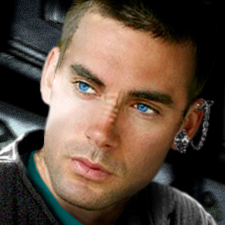

FOTO
Sono oramai passate 5 settimane... da quando siamo partiti per questa nuova missione. La navigazione procede
regolare e
tranquilla, senza eventi di rilievo, stavolta sarà più difficile delle altre: dobbiamo scoprire le cause delle
interferenze
nelle comunicazioni subspaziali, c'è qualcuno che sta intasando la rete, chissà quale sarà il suo
scopo...
Ma procediamo con ordine, e facciamo un piccolo passo indietro nel tempo, ai momenti successivi al nostro
ritorno sulla Terra...
La nave è stata ormeggiata al bacino spaziale per essere rimessa a punto (anche se questo è un mero eufemismo,
parlando della
Afrodite...), e all'equipaggio è stato concessa la meritata licenza.
Sàpek ed io potevamo finalmente tornare a casa, su Tycho City, rivedere gli amici e i parenti che ci
aspettavano, anche se ora
abbiamo imparato a considerare l'Afrodite un po' come una seconda casa. Ci hanno preparato una bella festa per
il nostro ritorno,
ci siamo divertiti molto, specialmente dopo, quando, a notte fonda, ci siamo messi a letto, il nostro lettone
a tre piazze,
con le lenzuola di seta... dormire l'uno tra le braccia dell'altro sul letto del nostro alloggio sulla nave,
non è la stessa cosa...
I primi giorni di franchigia sono volati, tra passeggiate, giri per shopping in centro, cene con gli amici
e... da soli... ma
un brutto giorno, arriva una chiamata dal nostro Capitano: dal Comando di Flotta, niente meno che
dall'Ammiraglio Terenzio Colbotto,
dell'Ufficio Controlli Salute Mentale, è arrivato un odine categorico quanto inatteso: tutti i membri
dell'equipaggio dell'Afrodite
(animali e ologrammi compresi) dovranno sottoporsi a un controllo psichiatrico, a rapporto da un certo Dottor
Bottino, presso
l'alloggio del Capitano Alighieri, sulla Afrodite (sicuramente l'ambiente 'familiare' è stato scelto per farci
sentire più a nostro
agio, anziché un asettico studio medico in qualche anonima palazzina del HQ).
Ma cavolo! Non è giusto... come possono revocarci la franchigia così! Come possono solo minimamente immaginare
di sottoporci a un
test psichiatrico?
Fatto sta che il giorno stabilito, ci presentiamo a rapporto da Bottino.
Ero molto agitato quella mattina. Sàpek era dentro da circa due ore... non appena le porte dell'alloggio del
Capitano Alighieri,
temporaneamente adibite a studio del Dr. Comm. Proff. Egregio Supremo Giuseppe Bottino Professionista Emerito
si aprirono,
scorsi una nota di preoccupazione sul volto di Sàpek, ma non ebbi che il tempo per un sorriso, perché venne
subito il mio turno.
Il S.B. era praticamente appollaiato su uno sgabello molto alto; appena entrai mi fece freddamente cenno di
accomodarmi sul lettino,
e, DiPAD alla mano, iniziò subito quello che, a poco a poco, cominciò a delinearsi come un interrogatorio,
anziché l'informale
colloquio che mi aspettavo... è riuscito a farmi rimpiangere Becco, il che è tutto dire!!!
Mi fece una serie di domande a raffica chiedendo cose senza senso, su tabelline, gradini, animali, comignoli,
nebule, sogni e codici a barre...
E si è anche divertito a torturare il mio Sàpek. Se mi ricapita tra le mani, lo strozzo quel tappetto...
- computer, cancellare ultimo paragrafo, e riprendere registrazione.
Eseguito.
A tutt'oggi ancora non è stato reso noto l'esito di quei test, so solo che in futuro dovremo accuratamente
evitare di finire dentro
altre nebule, o saranno guai... (sigh!!!).
È un vero peccato, mi piacciono tanto, e poi servono a prendere punti utilità ma sono sicuro che troveremo un
altro modo per guadagnarne.
Come se non bastasse, il GM Frruuu ci da una 'bellissima' notizia: la licenza è revocata, e dobbiamo subito
partire per una missione
della massima urgenza. Si tratta di trovare i responsabili delle interferenze alle comunicazioni subspaziali,
roba da controspionaggio,
mica bau bau micio micio. E una missione così delicata hanno pensato bene di affidarla al giovane equipaggio
di una scalcinata Miranda.
Forse sto dando un'impressione sbagliata: io amo l'Afrodite, è un po' la mia seconda casa. È per questo che mi
permetto di trattarla
male, ma guai a chi osasse dire una sola parola nei suoi confronti.
Dunque, eccoci di nuovo in viaggio, verso altre mirabolanti avventure... incazzati come bisce, ma ligi al
dovere...
Avevamo lasciato da un bel po' il bacino spaziale, quando De Niro diede un grido soffocato:
- Capitano, guardi!
Tutti gli sguardi si rivolsero verso il visore principale, e la potemmo ammirare in tutta la sua potente
bellezza, la famosa
Balla Nebula, l'unica Nebula Futurista del quadrante alpha.
- Capitano, una nebula, perché non ci facciamo un salto?
- No ragazzi, sapete che lo abbiamo promesso, per questa volta niente Nebule.
- Oh, Capitano, solo un saltino, facciamo in un attimo!
- Dovete essere forti, pensate a qualcos'altro, magari un buco nero.
- Mandiamoci almeno una sonda, una piccolina. Per favore!
- NO, sarebbe come imbrogliare. Dobbiamo dimostrare la nostra forza d'animo.
- Ma non è giusto! Così vicina eppure così lontana...
- Andiamo, per consolarvi poi vi faccio prendere doppia porzione di nutella al prossimo party.
- Uahhh, vogliamo la Nebula...
- E andiamo, siamo Ufficiali della Flotta Stellare o ragazzini che stanno giocando?
- ...
- ...
- ...
- Allora, ci dovete pensare ancora molto?
- Beh, non è una domanda da poco, ci lasci il tempo di riflettere!
La navigazione procedeva senza problemi di rilievo, a parte le comunicazioni sempre più disturbate via via che
ci avvicinavamo alle coordinate indicateci da Ailoura.
Ad un certo punto, le porte del turbolift si sono aperte ed una scatoletta piena di un liquido biancastro e
lattiginoso è entrata in Plancia galleggiando a mezz'aria. Ai suoi lati c'erano un paio di forbici ed un
asciugamano. Tale vista fece gelare tutti; Boregh, che stava sedendosi alla sua postazione cadde a terra
cominciando a lamentarsi a voce alta, molto alta...
- Infermeria, abbiamo un ferito in Plancia, sbrigatevi. Boregh soffra in silenzio sta facendo vibrare le
paratie.
L'incidente a Boregh ci aveva distratti dalla scatola misteriosa; quando il Capitano, se la vide galleggiare a
pochi centimetri dal naso, fece un balzo all'indietro quasi calpestando il povero klingon.
- Che un angelo ti strozzi con l'aureola, che diavolo sarebbe 'sta cosa?
La scatoletta iniziò ad emettere una luce azzurrognola e trasmettere una vocina suadente:
- Capitano, sono lieto di fave la sua conoscenza, mi chiamo Tax Ibisont V e sono il nuovo pavvucchieve di
bovdo
- Il nuovo cosa? Chi l'ha mandata qui? è forse amico del maestro di ballo? - gridò Beppe
- Pev cavità, quel pavvenù. No vede, sono qui gvazie ad una nuova linea tempovale, un attimo pvima sono
all'Academy insieme ad un gvosso dvago, pvonto a libevave i miei fvatelli simbionti Trill, e un attimo dopo
eccomi su questa mevavigliosa astvonave con un impulso ivvefvenabile a tagliav capelli. Anzi, ova che ci
penso, mi sembva che i suoi siano lunghini Capitano, le va una scovciatina?
- Vade retro, tosatore vermoso, i miei capelli non si toccano!
- Uh, non c'è bisogno di inquietavsi. Comunque, se qualcuno volesse appvofittave della mia expevtise, mi
tvovevà sul Ponte 8, subito dopo la pizzeria.
E così dicendo, Tax scomparve nel turbolift.
Non ci eravamo ancora ripresi da quell'incontro che la voce del computer eruppe dai diffusori audio della
Plancia:
STARFLEETEL STICAFONE, MESSAGGIO GRATUITO: L'UTENTE NON è ABILITATO AL TIPO DI
CHIAMATA RICHIESTO...
al che ci guardiamo tutti sbigottiti...
- Che cosa...
- Mi spiace Capitano, stavo solo tentando di mandare un aggiornamento della nostra posizione al Comando di
Flotta e questo è il risultato. Sembra ci siano delle interferenze.
- Ma no, non mi dica, e chi l'avrebbe detto. Guardi se almeno le comunicazioni interne la nave sono
funzionanti, devo fare un annuncio!
- Canale aperto Signore.
- Qui è il Capitano che vi parla, debbo farvi le congratulazioni da parte del Presidente della Flotta Stellare
per l'ottimo lavoro svolto nella missione coi Sergiss. Naturalmente mi unisco a lui nel complimentarmi con
tutti voi per il vostro apporto, mi avete reso fiero di essere il vostro Capitano. Mi raccomando, ricordatevi
che la missione è da considerarsi classified, in altre parole tenete il becco chiuso se volete avere un futuro
nella Flotta, anzi se volete avere un futuro qualsiasi. Alighieri, chiudo.
- Signore, siamo entrati nel sistema K5
- È da uno di questi pianeti che hanno origine le interferenze alla comunicazioni.
- Computer, Condizione gialla.
Poco dopo Fabiola mi chiama dal laboratorio e mi informa che Arianna Field, la cartografa di bordo, ha
dei problemi con alcuni rilevamenti sensoriali... chissà che starà combinando. Quando ne avrò modo, ho
intenzione di andare da lei a darle una mano: da quando Smith le fa le poste, quella ragazza mi è diventata
distratta... e ora che non c'è il GM D'Accardi (assegnato ad una Missione Speciale) a controllarlo... lasciamo
perdere i commenti. Dirò solo che Ciccozzi non è certo all'altezza del suo compito, ma Cip e Ciop sarebbero
stati peggio; e lo Smith come Vice Capo della Sicurezza non ce lo vedo proprio...
Ero ancora di turno in Plancia quando dall'Infermeria arrivò una brutta notizia: T'Mik informò di aver
ricevuto comunicazione che il Dr. Adams era deceduto. Le notizie erano scarse e frammentarie, dovute alle
interferenze ma la dottoressa stava dandosi da fare per ottenere altre informazioni.
Poi De Niro comunicò il nostro arrivo a destinazione.
- Capitano, siamo arrivati al pianeta da cui provengono le interferenze.
- Orbita standard, signor De Niro.
- La squadra di sbarco Alpha si prepari in sala teletrasporto due. Frruuu, Renzi, Rael, Rogers, Kelley,
Magnum, Jacket, Van Bajark: sbarcate sul pianeta, ispezionatelo fino a che trovate qualcosa, ma, mi
raccomando, non commettete imprudenze, non voglio perdere nessun'altro oggi.
In Plancia, Boregh sostituisce Peter, mentre Ciccozzi prende il posto di Rael al Tattico... Beppe lo guarda
storto: povero Gino, alle volte mi fa una pena... a volte.
Intanto la Field continua a fare casini: dovrò proporla per una nota di demerito al Capitano, ma prima gliene
parlerò di persona, voglio approfondire le sue ragioni, forse è solo stanca, ultimamente è sotto stress.
Mentre la squadra fa ricerche sul Pianeta, in Plancia ne approfittiamo per fare il punto della situazione, in
attesa che i ragazzi tornino su e ci informino dell'esito delle indagini in superficie. Non possiamo
comunicare per via delle interferenze che hanno rallentato anche alcune funzioni del computer di bordo...
forse
è a causa loro che Arianna ha avuto quei problemi di lettura, è sempre stata una cartografa eccellente, mi
sembra strano che così, all'improvviso, abbia problemi con la sua consolle.
(La Sala Cartografia Stellare della Afrodite è all'avanguardia: mica come quel reperto archeologico che ha a
disposizione Data sull'Enterprise. L'Afrodite dispone di sofisticatissimi e aggiornatissimi - non che
dettagliatissimi - schemi cartacei appuntati alle paratie della sala, ospitata presso lo sgabuzzino delle
scope di Ernestina, con puntine da disegno... mica pizza e fichi)
Mentre facevo queste considerazioni, il povero Ciccozzi cade dalla sua poltroncina, evidentemente si sente a
disagio in Plancia, (o forse Geppo gli ha fatto un dispetto... non lo sapremo mai), sotto lo sguardo rigido
del
Capitano, che coglie l'occasione per un solenne rimprovero... ma in fondo Beppe ha ragione a prendersela: Gino
è
così imbranato che alle volte mi chiedo come abbia potuto diventare ufficiale della Flotta Stellare.
- Signore, siamo riusciti a stabilire un contatto con la squadra di sbarco, o forse è il contrario... ma il
segnale è disturbato.
- Apra il canale...
- Qui krkrrrkk il Guakrkrkrk Bajark, abbia krkrk ferito, krkrrk trasport krkrk ermeria...
- Non è possibile, il teletrasporto è temporaneamente fuori uso, dovrà pensarci lei.
Poco dopo anche Renzi ci contattò (la comunicazione è disturbata, ma a beneficio del lettore inserirò i
sottotitoli):
- Qui krrkkrkkrrrrr Renzi, krkkrrrrr dividuato il pianet krkrkrrrkkkrrk segnale d�interkrkrk rkrkrk messo
krkrkr.
(Qui è il GM Renzi, Signore, abbiamo individuato il pianeta da cui proviene il segnale
che viene ritrasmesso
da qui)
- Non si è capito molto... Signor Renzi, potrrebbe ripetere?
- krkrrkr ando krkrkrk coordinate.
(Sto trasmettendovi le coordinate)
Finalmente dall'Ingegneria giunse una buona notizia:
- Il Teletrasporto è funzionante, Signore.
- Bene, era ora! Alighieri a squadra di sbarco: il teletrasporto è funzionante, prepararsi a risalire a
bordo.
- krkrk amo termi krkrrkkkrrr teletrasportaci krkrrkrrkkk bordo.
- Ottimo lavoro. Fate risalire la squadra. Signor De Niro, imposti la rotta per le coordinate che ci ha
trasmesso Renzi, ma aspetti, le verificheremo manualmente, non vorrei che le interferenze avessero alterato i
dati trasmessi.
- Si Signore.
- Squadra di sbarco a bordo, Capitano.
- Bene. Signor Renzi, potrebbe controllare l'esattezza delle coordinate trasmesse?
- Subito Capitano... Sì sono corrette.
- Bob... 'nnamo!
continua
Poi Beppe informò l'equipaggio che da lì a due ore ci sarebbe stata una veglia funebre in onore del Dr.
Adams.
Sui tavoli c'erano boccali di birra e sacchetti di noccioline; ognuno di noi prese un boccale e si voltò in
silenzio verso
il Capitano:
- Siamo qui riuniti per rendere omaggio ad uno dei nostri, senza di lui il vostro Capitano probabilmente non
sarebbe ciò che è
ora. Lui ha indicato la via a tutti noi, folli, ironici, fantasiosi giocatori... a Douglas Noël Adams, addio e
grazie per tutte le risate.
Commossi e in religioso silenzio bevemmo la nostra birra e sgranocchiammo noccioline, asciugandoci le lacrime
con il nostro
asciugamano... da bravi Autostoppisti Galattici sappiamo sempre dov'è il nostro asciugamano.
GM Da Nee
XSO
USS Afrodite NCC-1863